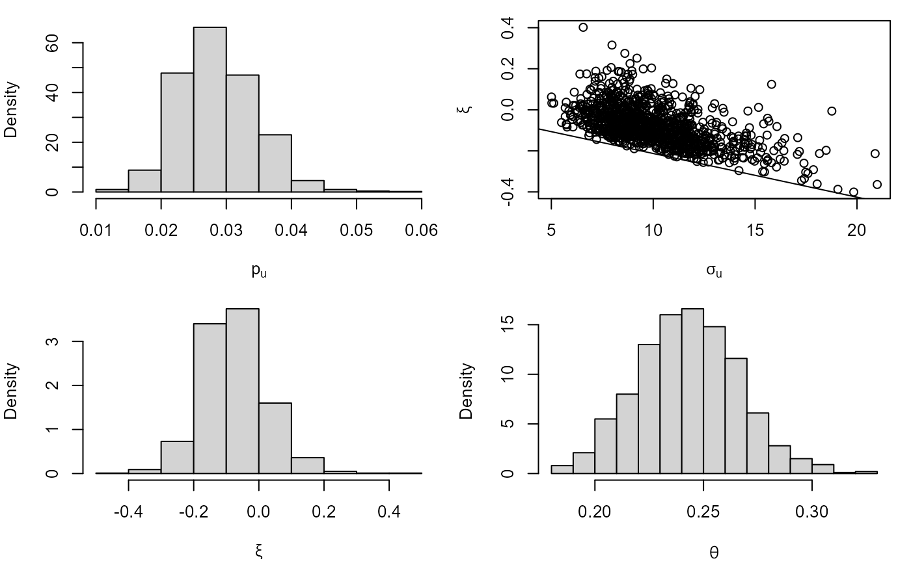

Performs threshold-based Bayesian inference for 3 aspects of stationary time series extremes: the probability that the threshold is exceeded, the marginal distribution of threshold excesses and the extent of clustering of extremes, as summarised by the extremal index.
Usage
blite(
data,
u,
cluster,
k = 1,
inc_cens = TRUE,
ny,
gp_prior = revdbayes::set_prior(prior = "mdi", model = "gp"),
b_prior = revdbayes::set_bin_prior(prior = "jeffreys"),
theta_prior_pars = c(1, 1),
n = 1000,
type = c("vertical", "none"),
...
)Arguments
- data
A numeric vector or numeric matrix of raw data. If
datais a matrix then the log-likelihood is constructed as the sum of (independent) contributions from different columns. A common situation is where each column relates to a different year.If
datacontains missing values thensplit_by_NAsisvused to divide the data further into sequences of non-missing values, stored in different columns in a matrix. Again, the log-likelihood is constructed as a sum of contributions from different columns.- u
A numeric scalar. The extreme value threshold applied to the data. See Details for information about choosing
u.- cluster
This argument is used to set the argument
clustertomeatCL, which calculates the matrix \(V\) passed as the argumentVtoadjust_loglik. Ifdatais a matrix andclusteris missing thenclusteris set so that data in different columns are in different clusters. Ifdatais a vector andclusteris missing then cluster is set so that each observation forms its own cluster.If
clusteris supplied then it must have the same structure asdata: ifdatais a matrix thenclustermust be a matrix with the same dimensions asdataand ifdatais a vector thenclustermust be a vector of the same length asdata. Each entry inclustersets the cluster of the corresponding component ofdata.- k, inc_cens
Arguments passed to
kgaps.ksets the value of the run parameter \(K\) in the \(K\)-gaps model for the extremal index.inc_censdetermines whether contributions from right-censored inter-exceedance times are used. See Details for information about choosingk.- ny
A numeric scalar. The (mean) number of observations per year. Setting this appropriately is important when making predictive inferences using
predict.blite, butnyis not used bybliteso it need not be supplied now. Ifnyis supplied toblitethen it is stored for use bypredict.blite. Alternatively,nycan be supplied in a later call topredict.blite. Ifnyis supplied to bothbliteandpredict.blitethen the value supplied topredict.blitewill take precedence, with no warning given.- gp_prior
A list to specify a prior distribution for the GP parameters (\(\sigma\)u, \(\xi\)), set using
set_prior.- b_prior
A list to specify a prior distribution for the Bernoulli parameter \(p\)u, set using
set_bin_prior.- theta_prior_pars
A numerical vector of length 2 containing the respective values of the parameters \(\alpha\) and \(\beta\) of a Beta(\(\alpha\), \(\beta\)) prior for the extremal index \(\theta\).
- n
An integer scalar. The size of posterior sample required.
- type
A character scalar. Either
"vertical"to adjust the independence log-likelihood vertically, or"none"for no adjustment. Horizontal adjustment is not offered because it does not preserve the correct support of the posterior distribution.- ...
Further arguments to be passed to the function
meatCLin the sandwich package. In particular, the clustering adjustment argumentcadjustmay make a difference if the number of clusters is not large.
Value
An object of class c("blite", "lite", "chandwich").
This object is an n \(\times 4\) matrix containing the
posterior samples, with column names
c("p[u]", "sigma[u]", "xi", "theta").
The object also has the attributes "Bernoulli", "gp",
"theta", which provide the fitted model objects returned from
adjust_loglik (for "Bernoulli" and
"gp") and kgaps (for "theta").
The named input arguments are returned in a list as the attribute
inputs. If ny was not supplied then its value is NA.
The call to blite is provided in the attribute "call".
A call to flite is used to create adjusted log-likelihoods
for \(p\)u and
(\(\sigma\)u, \(\xi\)).
The object returned from the call is provided as the attribute
"flite_object".
Objects inheriting from class "blite" have coef,
nobs, plot, summary, vcov and confint
methods. See bliteMethods.
predict.blite can be used to make predictive inferences about
the largest value to be observed in N years.
Details
See flite for details of the (adjusted) likelihoods
on which these Bayesian inferences are based.
The likelihood is based on a model for 3 independent aspects.
A Bernoulli(\(p\)u) model for whether a given observation exceeds the threshold \(u\).
A generalised Pareto, GP(\(\sigma\)u, \(\xi\)), model for the marginal distribution of threshold excesses.
The \(K\)-gaps model for the extremal index \(\theta\).
The general approach follows Fawcett and Walshaw (2012).
The contributions to the likelihood for
\(p\)u and
(\(\sigma\)u, \(\xi\))
are based on the vertically-adjusted likelihoods described in
flite. This is an example of Bayesian inference using a
composite likelihood Ribatet et al (2012). Priors for
\(p\)u
(\(\sigma\)u, \(\xi\))
and \(\theta\) are set using the arguments gp_prior,
b_prior and theta_prior_pars.
Currently, only priors where
\(p\)u
(\(\sigma\)u, \(\xi\))
and \(\theta\) are independent a priori are allowed.
Two tuning parameters need to be chosen: a threshold \(u\) and the
\(K\)-gaps run parameter \(K\). The exdex
package has a function choose_uk to inform this
choice.
Random samples are simulated from the posteriors for
\(p\)u and
(\(\sigma\)u, \(\xi\))
(using ru) and \(\theta\) (using
kgaps_post).
References
Fawcett, L. and Walshaw, D. (2012), Estimating return levels from serially dependent extremes. Environmetrics, 23, 272-283. doi:10.1002/env.2133
Ribatet, M., Cooley, D., & Davison, A. C. (2012). Bayesian inference from composite likelihoods, with an application to spatial extremes. Statistica Sinica, 22(2), 813-845.
See also
bliteMethods, including plotting the posterior
samples.
predict.blite to make predictive inferences about
future extreme values.
flite for frequentist threshold-based inference
for time series extremes.
choose_uk to inform the choice of the
threshold \(u\) and run parameter \(K\).
Examples
### Cheeseboro wind gusts
cdata <- exdex::cheeseboro
# Each column of the matrix cdata corresponds to data from a different year
# blite() sets cluster automatically to correspond to column (year)
cpost <- blite(cdata, u = 45, k = 3)
summary(cpost)
#>
#> Call:
#> blite(data = cdata, u = 45, k = 3)
#>
#> Posterior mean Posterior SD
#> p[u] 0.02864 0.005921
#> sigma[u] 10.07000 2.436000
#> xi -0.07482 0.097870
#> theta 0.24300 0.023470
## Plots of posterior samples
plot(cpost)

## Credible intervals
confint(cpost)
#> 2.5% 97.5%
#> pu 0.01817177 0.04050669
#> sigmau 6.40223239 15.92448183
#> xi -0.24391734 0.13996156
#> theta 0.19856593 0.29101585